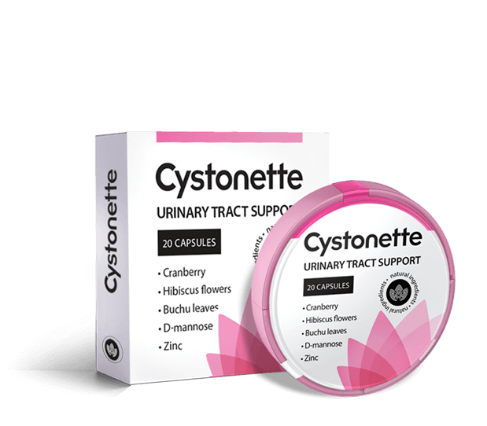

Secondo le statistiche, la cistite nelle donne è 75 volte più comune che negli uomini. Se la malattia non viene curata, diventa cronica, il che è pericoloso e dato che può diventare quasi asintomatica. Quale intervento è necessario e cosa fare per evitare che la malattia diventi cronica, ce lo racconta l'urologo Simone Rossi.

– Salve, dottor Rossi, ci dica, qual’è la causa della cistite?
– La causa principale è l’aumento di batteri all’interno della vescica. Molto spesso si tratta di E. Coli. Ma le cause possono essere anche altre:
- colpi di freddo;
- sbalzi ormonali;
- stile di vita sedentario;
- infiammazione degli organi sessuali
- problemi di igiene personale;
- traumi (più frequentemente durante il sesso);
- stress;
- assunzione di alcol e cibo piccante.
– Come si fa notare la malattia?
– Ogni organismo risponde individualmente all'infezione. Molto spesso, la cistite acuta è accompagnata da minzione dolorosa, dolori al basso ventre e febbre. Resti o sangue possono essere presenti nelle urine. Ma non dimenticatela forma sintomatica della cistite.
– Se si è colpiti dalla variante asintomatica, come si fa a capire di essere malati?
– Proprio questa è la pericolosità della cistite. Il processo infiammatorio può essere rilevato solo attraverso test mirati: ad esempio un’analisi del sangue accurata.
– Se la cistite non da problemi, non potrebbe passare da sola?
– Con un trattamento prematuro, la cistite assume una forma cronica, che porta a molte conseguenze e complicazioni.
– Di cosa parliamo?
– La cistite ha effetti sui reni e sugli altri organi correlati, e può causare:
- sterilità;
- infiammazione dell’appendice;
- ascessi ai reni;
- insufficienza renale;
- paracistite;
- pielonefrete;
- tigonite;
- cistalgia;
- reflusso.

– Cosa si può fare in queste situazioni?
– La cura della cistite dovrebbe essere completa. I pazienti che agiscono secondo uno schema spesso vengono a trovarmi: si ammalano, prendono un antibiotico e continuano in un circolo vizioso. Questo è fondamentalmente sbagliato. Se dopo i sintomi della cistite con gli antibiotici scompaiono i sintomi, la malattia non è stata curata. Inoltre, molti trascurano la loro salute e non prendono i Preparati fino alla fine. Se ti senti meglio, questo non significa che sei sano. È necessario sottoporsi a un ciclo completo di trattamento in modo che il corpo sviluppi anticorpi contro i batteri patogeni.
– Come si raffigura una cura completa?
– Uno stile di vita sano è importante: è necessario evitare l'ipotermia, sospendere l'attività sessuale per la durata della malattia, non prendere alcool e spezie. Il trattamento deve mirare alla rapida eliminazione dell'agente patogeno, all'eliminazione dei sintomi e alla prevenzione della ricaduta della malattia. Per stabilizzare lo sviluppo di recidive della malattia, ridurre la gravità dell'infiammazione e del dolore, normalizzare la minzione, si utilizzano i Fito preparati. Nella mia pratica, utilizzo . Questo strumento è considerato il più efficace..

– Ci racconti di più sul metodo di cura.
– Il preparato è naturale e nel 98% dei casi elimina i sintomi della cistite senza bisogno di antibiotici. Ha un effetto antinfiammatorio ed antibatterico, inoltre elimina gli spasmi. elimina in poco tempo le infezioni , elimina i dolori acuti e stabilizza la minzione. Una differenza importante rispetto ad altri rimedi a base di erbe è che ha un'azione diretta, previene le ricadute e aiuta il corpo a rafforzare l'immunità.
– Questo preparato aiuta con la cistite cronica?
– Il preparato elimina l’infiammazione sia in caso di crisi che in forma cronica. Nel caso di problemi cronici elimina le ricadute nel 95% dei casi.
– Quanto a lungo bisogna prendere il preparato per eliminare la cistite?
– Bisogna effettuare un ciclo di cura. In 28 giorni, non solo i sintomi passano, ma viene ripristinata la microflora e viene creato uno strato protettivo che impedisce il rientro dei batteri. Cioè, una persona malata crea protezione e rafforza il sistema immunitario. Per ammalarti di nuovo, devi impegnarti molto.
– Grazie mille, dottor Rossi, per informazioni utili su come trattare correttamente la cistite. Penso che sia molto bello che ora si possano evitare antibiotici, per curarsi con rimedi naturali.
– Grazie a voi per gli inviti. Voglio dire che oggi i medici evitano i preparati sintetici a favore di quelli naturali. Sono meno pericolosi per gli organi interni e l'immunità umana e combattono ugualmente l'infezione batterica. Finora, è l'unico rimedio naturale che blocca la riproduzione dei batteri e consente ai meccanismi protettivi naturali di eliminarli.
Ci sono altre domande? Fatele allo specialista sul sito del produttore.